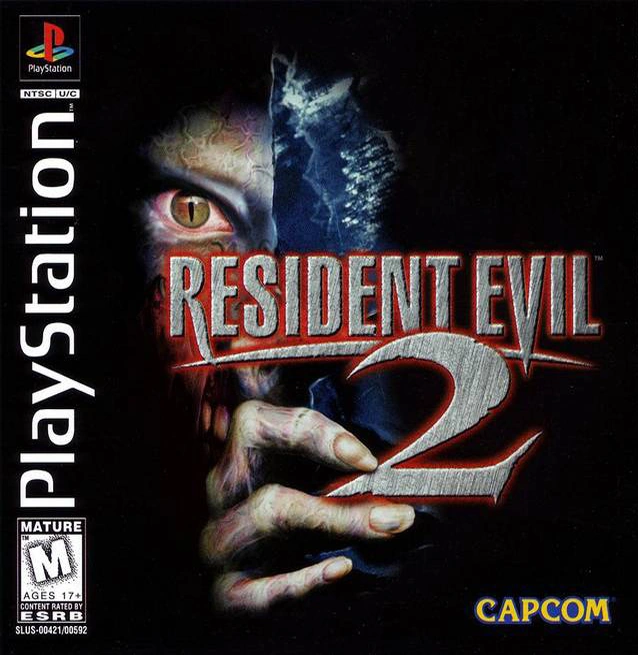
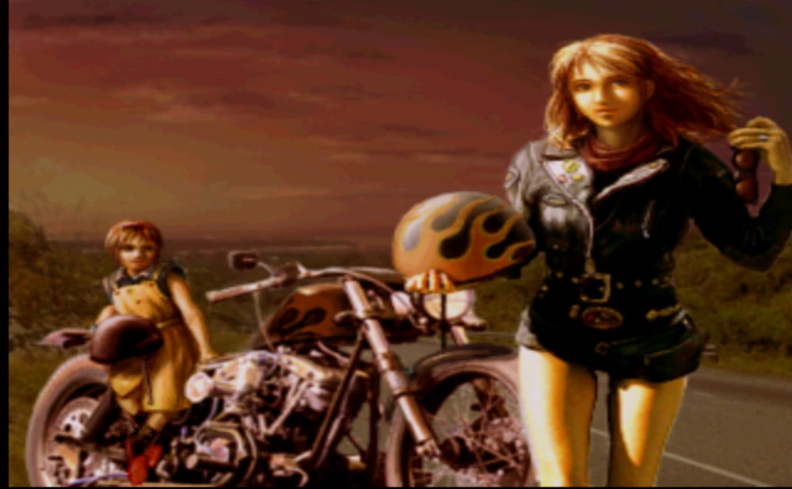
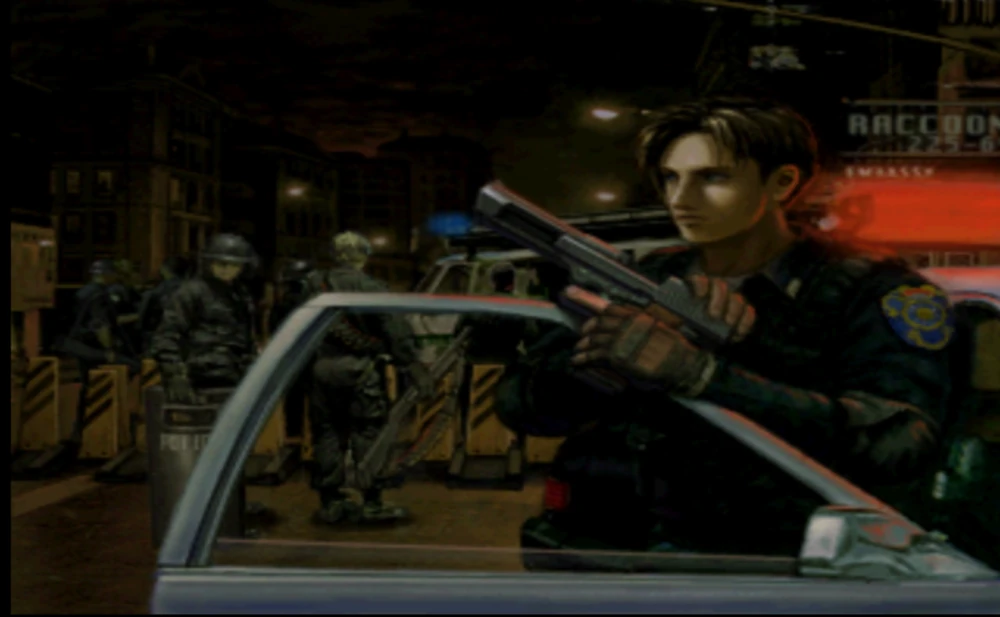
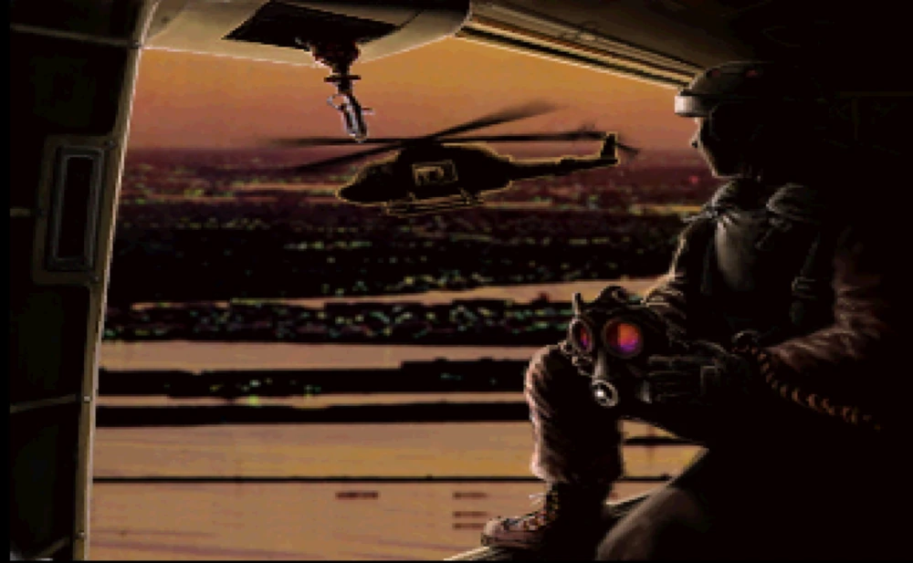

Bienvenidos a la Mini Wiki de Resident Evil 2

Resident Evil 2, conocido en Japón como Biohazard 2 s un videojuego del género survival horror desarrollado
por Capcom y es también el segundo título de la saga de videojuegos Resident Evil fungiendo como la secuela
directa del primer título pero con un elenco de personajes diferentes a la entrega anterior. Originalmente
lanzado para la PlayStation en 1998 y el segundo en orden de lanzamiento de la saga, el juego fue portado a
PC, Nintendo 64, Game.com, Sega Dreamcast y Nintendo GameCube. Resident Evil 2 también estuvo planeado para la
Sega Saturn y la Game Boy Advance, pero fueron cancelados por Capcom. Resident Evil 2 actúa como secuela
directa, toma lugar dos meses después de los acontecimientos del primer juego donde finalmente, Raccoon City
sucumbe ante el peligroso virus-T y el jugador asume el control de
Leon Scott Kennedy un oficial de policía
novato que recién se incorpora a la fuerza policial de la ciudad siendo su primer día de trabajo y Claire
Redfield , una estudiante universitaria que a su vez es la hermana menor de Chris Redfield, uno de los
dos
protagonistas de Resident Evil la cual fue a Raccoon City para buscar a su hermano mayor del cual perdió todo
contacto después de los eventos del juego anterior.
Resident Evil 2 tomó aproximadamente un año y nueve meses en ser desarrollado. Su equipo de desarrollo constó
de cincuenta personas, creado a partir de un prototipo inicial llamado Resident Evil 1.5, sin embargo, su
desarrollo fue descartado cuando el juego llevaba cerca del 60 y 80% ya que su productor, en sus propias
palabras la consideraba sosa y aburrida. No obstante, se apostó por una idea más cinematográfica apostando por
una banda sonora más orquestal. Una de las novedades de Resident Evil 2 respecto al juego original es un
nuevo sistema denominado como "Zapping", el cual permite alterar eventos desde una partida con un protagonista
en la segunda partida con el otro protagonista, es decir, dependiendo de las decisiones tomadas en el
escenario A, estas afectan y alteran eventos en el escenario B, un elemento que también aumenta la
rejugabilidad del título.
Ficha Técnica
- Director: Hideki Kamiya
- Productor: Shinji Mikami
- Musicos: Masami Ueda, Shusaku Uchiyama y Shun Nishigaki.
- Desarrollador: Capcom
- Año de Lanzamiento: 1998
- Plataformas Originales: PlayStation, PC, Nintendo 64, Dreamcast, GameCube
- Género: Survival Horror
Sinopsis
Dos meses después de los horrores vividos en la Mansión Spencer por el equipo S.T.A.R.S., la pesadilla se
traslada a las calles de Raccoon City. El brote del devastador Virus-T, desarrollado en secreto por la
corporación farmacéutica Umbrella , se ha extendido por
toda la población a través del sistema de
alcantarillado de la ciudad, transformando a sus habitantes en criaturas caníbales sin control.
En medio del caos, dos desconocidos llegan a la ciudad por motivos muy distintos: Leon S. Kennedy, un policía
novato en su primer día de servicio en el departamento de policía local (R.P.D.), y Claire Redfield, una
estudiante universitaria en búsqueda de su hermano desaparecido, Chris Redfield. Tras un cruce de caminos
empañado por la tragedia, ambos deben separarse para sobrevivir al infierno en el que se ha convertido la
ciudad, refugiándose en la comisaría de policía y adentrándose progresivamente en los secretos más oscuros de
Umbrella Corporation.
Escenarios A y B
El sistema de escenarios
Resident Evil 2 cuenta con un sistema de escenarios que permite jugar la historia desde la perspectiva de
Leon S. Kennedy o Claire Redfield. Dependiendo del personaje elegido para comenzar, el segundo personaje
tendrá acceso a su respectivo escenario B, creando cuatro posibilidades: Leon A, Leon B, Claire A y Claire B.
Los escenarios A y B transcurren durante los mismos acontecimientos y permiten observar diferentes partes de
la historia desde la perspectiva de cada personaje. Además, algunas acciones realizadas durante el primer
escenario pueden influir en determinados elementos del segundo.
Leon A y Claire B
Al completar el escenario A de Leon, se desbloquea el escenario B de Claire. Esta combinación permite
experimentar la historia desde ambos personajes, aunque algunos acontecimientos presentan diferencias con
respecto a la otra combinación de escenarios.
Claire A y Leon B
Al completar el escenario A de Claire, se desbloquea el escenario B de Leon. Esta combinación es considerada
la ruta canónica del Resident Evil 2 original, ya que posteriores entregas y materiales de la
saga
incorporaron acontecimientos pertenecientes a esta combinación.
¿Cuál es el escenario canónico?
La combinación tradicionalmente considerada canónica es Claire A y Leon B. Sin embargo,
debido a que Resident Evil 2 fue diseñado para ofrecer cuatro escenarios diferentes, no todos los
acontecimientos de una sola combinación pueden considerarse completamente independientes de los demás.
Por esta razón, la historia posterior de Resident Evil incorpora elementos de diferentes escenarios, aunque
Claire A y Leon B son la combinación que mejor representa la línea argumental considerada principal.
Finales
Los finales del juego son imágenes que cuentan lo que ocurrió con los personajes de Resident Evil 2 después
del desastre de Raccoon City. Para desbloquearlos, es necesario haber terminado el juego en cualquier modo de
dificultad. Hay tres finales en total, por lo que se tiene que terminar el juego, tanto con Leon como con
Claire, y, además, terminar el modo "4to Superviviente" para conseguirlos todos.



¿Qué encontrarás en esta Wiki?
Personajes
Información detallada sobre los protagonistas que lideran la aventura, así como los aliados, supervivientes y
antagonistas que marcan la trama en la comisaría de Raccoon City y las instalaciones subterráneas.
Enemigos y Amenazas
Un compendio completo con las criaturas mutadas producidas por el Virus-T y el Virus-G , abarcando desde los
infectados comunes y especímenes hostiles hasta las armas bio-orgánicas más letales.
Arsenal y Equipamiento
La lista completa de armamento disponible durante la aventura, incluyendo armas cortas, escopetas,
lanzagranadas, armamento pesado de corte experimental y objetos defensivos indispensables para sobrevivir.